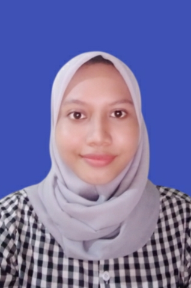

<ion-header [translucent]="true">
  <ion-toolbar color="primary">
    <ion-buttons slot="start" [routerLink] ="['/home']">
      <ion-icon name="home-outline"></ion-icon>
    </ion-buttons>
    <ion-title>
      Amin Prayugi
    </ion-title>
  </ion-toolbar>
</ion-header>

<ion-content [fullscreen]="true">
  <ion-header collapse="condense">
    <ion-toolbar>
      <ion-title size="large"></ion-title>
    </ion-toolbar>
  </ion-header>
  <div>
    <p style="text-align: center; font-size: large;">Cumlaude</p>
  </div>
  <div>
    <center></center>
  </div>
  <ion-card>

      <ion-list>
        <ion-item>
          <div></div>
         Nama Lengkap : Amin Prayugi
        </ion-item>
        <ion-item>
          <div></div>
          TTL   : Demak. 21 Juli 2000
        </ion-item>
        <ion-item>
          <div></div>
          Jurusan : Teknik Informatika
        </ion-item>
        <ion-item>
          <div></div>
          Alamat  : Jakarta
        </ion-item>
        <ion-item>
          <div></div>
         IPK  : 3.90
        </ion-item>
      </ion-list>
  </ion-card>
  <div class="center">
    <ion-button [routerLink] ="['/detailamin']" color="secondary">See Project</ion-button>
  </div>
</ion-content>
